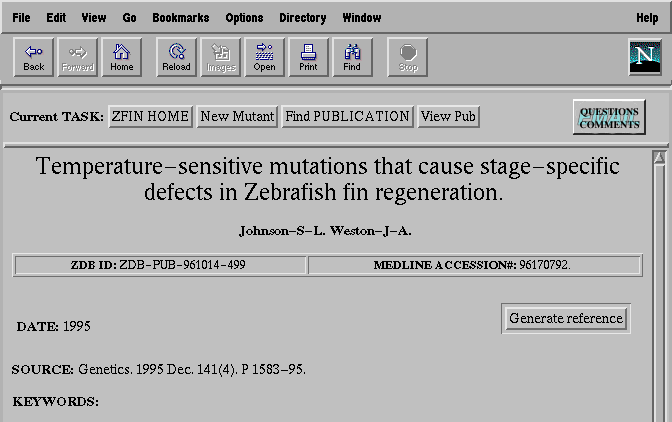

Task-centered Navigation in Web-accessible Dataspaces
Eckehard Doerry,
Sarah A. Douglas,
Arthur E. Kirkpatrick,
Monte Westerfield*
University of Oregon
Dept. of Computer Science, *Institute of Neuroscience
Eugene, OR 97403
Abstract
The increasing popularity of complex, web-accessible dataspaces demands intra-dataspace navigation mechanisms more powerful than the commonly provided history of traversed pages and ubiquitous "return to home page" buttons. Our experience in the design of a database for research geneticists has shown that, although users have little trouble finding specific data, they frequently become disoriented during multi-step data manipulations. For domains with a well-defined task space, we believe that a task-centered model of navigation can provide an effective solution to this problem.
Topic Areas
Browsing and Navigation Tools, Data and Link Management
Task-centered Navigation in Web-accessible Dataspaces
Navigation in electronic worlds encompasses a variety of wayfinding activities including surveying the data space contents, locating specific information, and maintaining orientation while moving about within the dataspace. Within the WWW community, attention has been devoted mainly to information finding activities; powerful WWW search engines (e.g. Yahoo!) have been developed to winnow through millions pages in search of potentially relevant information.
We are concerned with "intra-site" navigation within a WWW-accessible database we are developing for zebrafish geneticists. In this context, we have found that the most severe navigational difficulties experienced by users have to do with maintaining orientation within the data space as they engage in various search and data manipulation activities. These difficulties arise from several domain characteristics:
- Complex, multi-step activities. A central feature of our database is support for submission and updating of experimental data by users; this entails an open-ended sequence of nested form-filling, browsing, and selection tasks. For example, to submit a new mutation to the database, a user must specify the lineage of the mutation, the lab at which it was discovered, the mutant's phenotypic (observable) characteristics and chromosomal abnormalities, and the publications in which it has been described. Each of these steps may involve one or more subsequences as the user searches the database to locate and select relevant information. Thus, movement through the dataspace involves intertwined sequences of searching and browsing, rather than a simple unidirectional progression from the database entry point to target data.
- Dynamic, unbounded data space. In a database system, screens are dynamically generated based on user queries; the number of unique "places" within the data space is essentially infinite. Moreover, the information space is continually changing and growing as new data is added; the same sequence of navigational "moves" performed at different times may result in different displays, depending on what has changed in the interim. This makes it difficult to clearly define notions of "location" and "path" within the data space.
- Prevalence of similar displays. While screens vary in (potentially important) details, they are often similar in overall appearance. For example, every screen that presents a search interface has similar provisions for specifying search criteria and displaying search results. While such interface consistency is highly desirable from the perspective of learnability, we have found it to be a confounding factor for navigation.
In this complex information space, we have found that users have little trouble determining what data and activities are available, but easily become disoriented once engaged in an activity. Specifically, they often become confused about where they are within a multi-step process, how their current activity relates to an overall goal, and how to return to previous steps in the process.
Our initial efforts to provide navigational aids focused on simply making a record of previously traversed screens (pages) continually visible to the user; we found this approach to be completely inadequate because it does not make explicit the relationship of traversed pages to the user's domain level tasks. For example, the domain task of locating a certain set of mutations frequently entails iterative refinement of the search criteria; this leads to a lengthy sequence of pages (one for each refinement cycle), all related to the same overall domain task. Conversely, similar searches (e.g. searches for a publication) may occur at different times within an interaction, each associated with a different domain task. In both cases, a simple list of pages traversed does not reflect the conceptual structure of the domain level tasks the user was engaged in; this makes it difficult to determine current location within the dataspace, or where to "back up" to when attempting to undo (or re-do) some previous step.

Figure 1: A (truncated) snapshot of a user submitting a new mutation to the database. The user is currently engaged in the subtask of searching for and specifying the primary publication in which the new mutation was described. The task-centered navigational aid appears at the top of the page and reflects the user's position within the task/subtask hierarchy.
Motivated by these observations, we are exploring a task-centered model of navigation; a task-centered navigational aid draws on knowledge about the conceptual structure of domain level tasks to generate a dynamic representation of the user's current position within this task/subtask hierarchy. We have implemented a prototype of a task-centered navigational aid for the zebrafish genetics database. The aid appears as a sequence of tiles, displayed in a dedicated frame at the top of every page returned by the database, that reflects the user's current position within the task space. In Figure 1, for example, the user is submitting a new mutation to the database. As evidenced by the navigational aid, the user has embarked on the subtask of searching for and selecting the "primary publication" in which the new mutation was reported, and is currently examining a specific publication. Upon selecting a publication to associate with the submission, the user will be automatically be returned to the "new mutant" submission form (i.e. the pending super-task), with the selected publication filled in as the "primary publication". The user may also click on any tile in the task path to abort some current subtask and return directly to a previous step.
Although we have not yet completed a formal usability analysis, preliminary observations are very encouraging: most users immediately abandon the browser's mechanisms (i.e. the "back" button and list of pages traversed) in favor of the task-centered tool. In addition, user confusion regarding current location within the dataspace appears greatly reduced.
While the task-centered approach appears promising, many difficulties remain. A particularly challenging problem is how to gracefully accommodate arbitrary digressions. In the course of entering new data, for example, a user may notice that an existing record is incomplete and digress from the current task to update that record. The navigational aid must somehow recognize and account for such digressions in its representation of the user's position within the task space. On a more practical level, design of navigational aids is severely constrained by the WWW (HTML/HTTP) environment. Can we design effective navigational aids that do not require sophisticated, synchronous interface functionality?
The increasing popularity of complex, web-accessible dataspaces demands intra-dataspace navigation mechanisms more powerful than histories of traversed pages and ubiquitous "return to home page" buttons. For domains with a well-defined task space, we believe that a task-centered model of navigation can provide an effective framework for maintaining user's orientation within the dataspace.
References
Doerry, E.,Douglas S.,Kirkpatrick T.,& Westerfield, M. (1997).
Moving beyond HTML to Create a Multimedia Database with User-Centered Design: A Case Study of a Biological Database. Technical Report CIS-TR-97-02, Department of Computer Science, University of Oregon.
Return to Top of Page || Index.